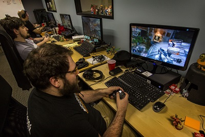
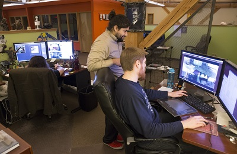

¿Cuándo se hará común la carrera universitaria de desarrollo de videojuegos?

La industria de los videojuegos es sumamente poderosa, no es necesario que les digamos eso, eso ustedes ya lo saben, sin embargo, a pesar de su fuerte presencia en el público y las montañas de dinero que están involucradas, el desarrollo de videojuegos no se ha oficializado como una carrera universitaria, como una carrera a la que se le pueda dedicar un completo estudio. Quizá esto parece ser un remolino en un vaso de agua, o sea, algo no tan grave, al fin y al cabo, los ingenieros en software o afines a ingeniería siguen siendo los programadores de los juegos, y los diseñadores digitales y sus variantes también se encargan de todo lo visual, entonces, ¿cuál es la necesidad?
Entendemos, para crear una carrera universitaria, al menos en cualquier institución pública, hay que exponer un sinfín de datos duros para poder acreditar tanto la demanda de la carrera como la necesidad fiable del objeto de estudio en la sociedad. Además de que, claro, quienes analizan la propuesta, no se sientan intimidados o arrojen juicios de valor antes de saber de qué se trata esta curiosa derivante de la creación del arte interactivo, requisitos que al parecer aún no se ha conseguido lograr después de todo lo anterior dicho.

Pero eso sí, no empezaremos a decir que son los viejos catedráticos los que no aceptan que el desarrollo de videojuegos sea una carrera común dentro del quehacer creativo de la cultura del entretenimiento y del arte, realmente el obstáculo ideológico está en todos, el hecho de ver el desarrollo de videojuegos como una carrera en la que te las vas a pasar jugando o en la que, entre medias, puedas jugar e incumplir a los parámetros básicos que exige tanto una ciencia o técnica académica, así como un trabajo, eso ya merma incluso que el desarrollo de videojuegos no se vea como un objeto de estudio serio.
Ahora bien, ¿por qué buscar que pase esto?, en que realmente beneficia que los juegos de video se conviertan en tema académico formal. El cine, la música y prácticamente cualquier arte, primero se originó con aquellos autodidactas natos que dieron a conocer su disciplina artística, y fue después cuando se empezó a academizar, ¿y qué pasó a partir de ese punto?, además de que el conocimiento se empezó a pasar a más personas y por lo tanto ya había más seres aportando sus propias creaciones… bueno, pues que el nivel y la calidad del objeto de estudio empezaba a aumentar. Pues ese podría ser un futuro interesante para el quehacer videojueguil.
Ahora, no nos malinterpreten, no decimos que el desarrollo de videojuegos sin una carrera específica en ello quiere decir que se hacen cosas mediocres o de mala calidad, simplemente puede ayudar a que dichas creaciones, gracias a su riguroso estudio y teorización, puede llegar a un estado de refinamiento, otra vez, como lo pudo ser el cine, la literatura, la pintura, etc.

Es más, no se necesita escuela para hacer grandes juegos, ahí está un Hideo kojima por ejemplo, quien tiene carrera trunca en economía y ahora es uno de los mayores creadores de videojuegos, sin embargo, así como las escuelas de cine, que han sacado a grandes directores, así esperamos que de las próximas escuelas de videojuegos puedan egresar grandes desarrolladores que refinen y evolucionen para bien esta industria que tanto amamos.